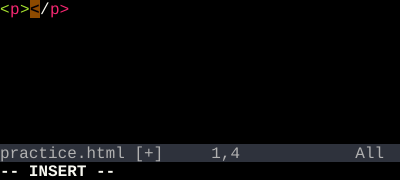

HTML/XML Tag Objects
it / at — operate inside an HTML or XML tag pair.
it is the inner range between matching<tag>…</tag>pairs. at includes the tags themselves.
If you spend any time in markup, it and at pay rent. They jump out from the cursor to the nearest enclosing tag pair.
| Key | Note |
|---|---|
| c | |
| i | |
| t |
| Key | Note |
|---|---|
| d | |
| a | |
| t |
| Key | Note |
|---|---|
| v | |
| a | |
| t |
Reference
| Object | Range |
|---|---|
| it | Inside <tag>…</tag> |
| at | Including <tag>…</tag> |
Worked example — cit and cat
HTML/XML tag objects.

See also: Bracket Text Objects, The Vim Grammar